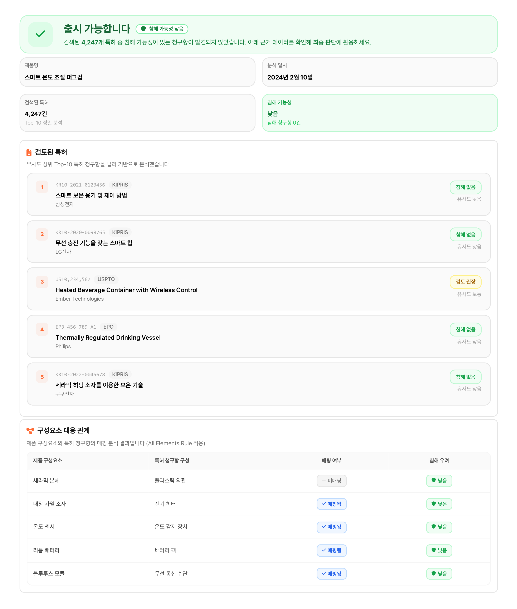

2주 걸리던 FTO 조사, AI가 10분으로 줄여드립니다.
키워드 한 줄이면 한국 특허청 DB에서
우리 제품과 충돌하는 특허·디자인을 찾아냅니다.

KIPRIS에서 특허 찾고, 청구항 읽고, 우리 제품이랑 대조하고... 한숨 쉬셨죠?
청구항 해석하고, 우리 제품이랑 구성요소 하나하나 대조하고...
→ FTO 조사 완료까지 평균 2주 이상
제품 출시 직전에 유사 특허를 발견하면 이미 늦습니다.
→ 설계 변경 비용 + 출시 지연 = 수천만 원 손실
KIPRIS 특허·디자인 자동 검색
키워드 또는 이미지 하나로 유사 건 TOP 10 추출
AI가 청구항 단위로 분석
구성요소별 침해 가능성과 근거를 제시
FTO 리포트 자동 생성
PDF로 즉시 다운로드, 변리사 상담 자료 및 기업 내부 판단 자료로 활용
KIPRIS에서 특허 찾고, 청구항 읽고, 대조하는 작업을 AI가 대신합니다.
→ 유사 특허·디자인 TOP 10 자동 추출
구성요소별로 우리 제품과 얼마나 겹치는지 AI가 분석합니다.
→ 사내 특허팀 검토 및 변리사 상담 자료로 활용
분석 결과를 PDF 리포트로 바로 다운로드할 수 있습니다.
→ 2주 이상 걸리던 조사를 10분으로
초기 스타트업, 연구소 담당자.
변리사 검토 전 1차 스크리닝이 필요한 분.
R&D, 제품기획 담당자.
빠르게 FTO 리스크를 확인하고 싶은 분.
IP 담당자, 특허사무소 변리사 및 직원.
대량 건을 빠르게 검토하고 리스크를 놓치지 않아야 하는 분.
특허는 키워드로, 디자인은 제품 이미지를 업로드합니다.
KIPRIS DB에서 유사 특허·디자인 TOP 10을 추출하고, 청구항 단위로 침해 가능성을 분석합니다.
침해 가능성 분석 결과를 확인하고, PDF로 다운로드하여 변리사 상담 자료로 활용합니다.
초기 단계에서 리스크를 인지하여 불필요한 개발 리소스 낭비를 사전에 방지합니다.
복잡한 특허 문헌 대신 핵심 쟁점 위주의 정리된 리포트로 빠른 의사결정을 돕습니다.
변리사 등 법률 전문가와 상담 전 기초 자료를 정리하여 상담 효율성을 극대화합니다.
FTOGuard는 정식 법률 자문이나 최종적인 특허 침해 판단을 대체하지 않습니다.
중요한 비즈니스 결정 전에는 반드시 변리사 또는 특허 전문 변호사와 상담하시기 바랍니다.